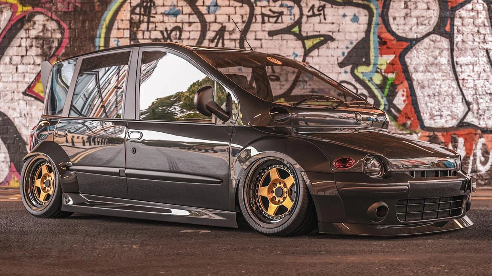

Fiat Multipla to samochód osobowy, który zdobył rozpoznawalność dzięki swojemu oryginalnemu designowi i przestronności. Znany jest ze swojej nietypowej sylwetki, charakteryzującej się wysoką sylwetką i szerokim nadwoziem, co przekłada się na wyjątkowo przestronne wnętrze. Fiat Multipla oferuje miejsca dla kilku pasażerów i cechuje się funkcjonalnym podejściem do przewozu osób oraz bagażu. To auto zdobyło popularność ze względu na swoją unikalność i praktyczność.

Parametry Fiat Multipla
Silnik: R4, benzynowy
Pojemność silnika: Od 1.6 do 1.9 litra (w zależności od wersji)
Moc silnika: Od 76 do 120 KM (w zależności od wersji)
Moment obrotowy: Od 136 do 181 Nm (w zależności od wersji)
Skrzynia biegów: Manualna, 5-biegowa
Napęd: Przedni (FWD)
Zawieszenie: Niezależne, przednie i tylne
Waga: Od 1,250 do 1,415 kg (w zależności od wersji)